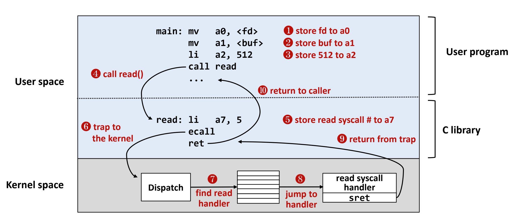

<!DOCTYPE html>
<html><head><title>03. Overview of UNIX-like OS</title><meta charSet="utf-8"/><meta name="viewport" content="width=device-width, initial-scale=1.0"/><meta property="og:title" content="03. Overview of UNIX-like OS"/><meta property="og:description" content="서울대학교 컴퓨터공학과 김진수 교수님의 &amp;quot;고급 운영체제&amp;quot; 강의를 필기한 내용입니다. 다소 잘못된 내용과 구어적 표현 이 포함되어 있을 수 있습니다. IPC (Inter Process Communication) § shell 에서 pipe (|) 도 IPC 이다 shell 이 두 프로세스를 fork 하기 전에 pipe file discriptor 를 만들고 한 프로세스의 stdout 을 나머지 하나의 stdin 으로 보내는 방식으로 작동한다."/><meta property="og:image" content="https://mdg.haeramk.im/static/og-image.png"/><meta property="og:width" content="1200"/><meta property="og:height" content="675"/><link rel="icon" href="../../../../../static/icon.png"/><meta name="description" content="서울대학교 컴퓨터공학과 김진수 교수님의 &amp;quot;고급 운영체제&amp;quot; 강의를 필기한 내용입니다. 다소 잘못된 내용과 구어적 표현 이 포함되어 있을 수 있습니다. IPC (Inter Process Communication) § shell 에서 pipe (|) 도 IPC 이다 shell 이 두 프로세스를 fork 하기 전에 pipe file discriptor 를 만들고 한 프로세스의 stdout 을 나머지 하나의 stdin 으로 보내는 방식으로 작동한다."/><meta name="generator" content="Quartz"/><link rel="preconnect" href="https://fonts.googleapis.com"/><link rel="preconnect" href="https://fonts.gstatic.com"/><link href="../../../../../index.css" rel="stylesheet" type="text/css" spa-preserve/><link href="https://cdn.jsdelivr.net/npm/katex@0.16.0/dist/katex.min.css" rel="stylesheet" type="text/css" spa-preserve/><link href="https://fonts.googleapis.com/css2?family=IBM Plex Mono&amp;family=Gowun Batang:wght@400;700&amp;family=Gowun Dodum:ital,wght@0,400;0,600;1,400;1,600&amp;display=swap" rel="stylesheet" type="text/css" spa-preserve/><script src="../../../../../prescript.js" type="application/javascript" spa-preserve></script><script type="application/javascript" spa-preserve>const fetchData = fetch(`../../../../../static/contentIndex.json`).then(data => data.json())</script></head><body data-slug="gardens/os/originals/aos.spring.2024.cse.snu.ac.kr/lectures/03.-Overview-of-UNIX-like-OS"><div id="quartz-root" class="page"><div id="quartz-body"><div class="left sidebar"><h1 class="page-title "><a href="../../../../..">Madison Digital Garden</a></h1><div class="spacer mobile-only"></div><div class="search "><div id="search-icon"><p>Search</p><div></div><svg tabIndex="0" aria-labelledby="title desc" role="img" xmlns="http://www.w3.org/2000/svg" viewBox="0 0 19.9 19.7"><title id="title">Search</title><desc id="desc">Search</desc><g class="search-path" fill="none"><path stroke-linecap="square" d="M18.5 18.3l-5.4-5.4"></path><circle cx="8" cy="8" r="7"></circle></g></svg></div><div id="search-container"><div id="search-space"><input autocomplete="off" id="search-bar" name="search" type="text" aria-label="Search for something" placeholder="Search for something"/><div id="results-container"></div></div></div></div><div class="darkmode "><input class="toggle" id="darkmode-toggle" type="checkbox" tabIndex="-1"/><label id="toggle-label-light" for="darkmode-toggle" tabIndex="-1"><svg xmlns="http://www.w3.org/2000/svg" xmlnsXlink="http://www.w3.org/1999/xlink" version="1.1" id="dayIcon" x="0px" y="0px" viewBox="0 0 35 35" style="enable-background:new 0 0 35 35;" xmlSpace="preserve"><title>Light mode</title><path d="M6,17.5C6,16.672,5.328,16,4.5,16h-3C0.672,16,0,16.672,0,17.5    S0.672,19,1.5,19h3C5.328,19,6,18.328,6,17.5z M7.5,26c-0.414,0-0.789,0.168-1.061,0.439l-2,2C4.168,28.711,4,29.086,4,29.5    C4,30.328,4.671,31,5.5,31c0.414,0,0.789-0.168,1.06-0.44l2-2C8.832,28.289,9,27.914,9,27.5C9,26.672,8.329,26,7.5,26z M17.5,6    C18.329,6,19,5.328,19,4.5v-3C19,0.672,18.329,0,17.5,0S16,0.672,16,1.5v3C16,5.328,16.671,6,17.5,6z M27.5,9    c0.414,0,0.789-0.168,1.06-0.439l2-2C30.832,6.289,31,5.914,31,5.5C31,4.672,30.329,4,29.5,4c-0.414,0-0.789,0.168-1.061,0.44    l-2,2C26.168,6.711,26,7.086,26,7.5C26,8.328,26.671,9,27.5,9z M6.439,8.561C6.711,8.832,7.086,9,7.5,9C8.328,9,9,8.328,9,7.5    c0-0.414-0.168-0.789-0.439-1.061l-2-2C6.289,4.168,5.914,4,5.5,4C4.672,4,4,4.672,4,5.5c0,0.414,0.168,0.789,0.439,1.06    L6.439,8.561z M33.5,16h-3c-0.828,0-1.5,0.672-1.5,1.5s0.672,1.5,1.5,1.5h3c0.828,0,1.5-0.672,1.5-1.5S34.328,16,33.5,16z     M28.561,26.439C28.289,26.168,27.914,26,27.5,26c-0.828,0-1.5,0.672-1.5,1.5c0,0.414,0.168,0.789,0.439,1.06l2,2    C28.711,30.832,29.086,31,29.5,31c0.828,0,1.5-0.672,1.5-1.5c0-0.414-0.168-0.789-0.439-1.061L28.561,26.439z M17.5,29    c-0.829,0-1.5,0.672-1.5,1.5v3c0,0.828,0.671,1.5,1.5,1.5s1.5-0.672,1.5-1.5v-3C19,29.672,18.329,29,17.5,29z M17.5,7    C11.71,7,7,11.71,7,17.5S11.71,28,17.5,28S28,23.29,28,17.5S23.29,7,17.5,7z M17.5,25c-4.136,0-7.5-3.364-7.5-7.5    c0-4.136,3.364-7.5,7.5-7.5c4.136,0,7.5,3.364,7.5,7.5C25,21.636,21.636,25,17.5,25z"></path></svg></label><label id="toggle-label-dark" for="darkmode-toggle" tabIndex="-1"><svg xmlns="http://www.w3.org/2000/svg" xmlnsXlink="http://www.w3.org/1999/xlink" version="1.1" id="nightIcon" x="0px" y="0px" viewBox="0 0 100 100" style="enable-background='new 0 0 100 100'" xmlSpace="preserve"><title>Dark mode</title><path d="M96.76,66.458c-0.853-0.852-2.15-1.064-3.23-0.534c-6.063,2.991-12.858,4.571-19.655,4.571  C62.022,70.495,50.88,65.88,42.5,57.5C29.043,44.043,25.658,23.536,34.076,6.47c0.532-1.08,0.318-2.379-0.534-3.23  c-0.851-0.852-2.15-1.064-3.23-0.534c-4.918,2.427-9.375,5.619-13.246,9.491c-9.447,9.447-14.65,22.008-14.65,35.369  c0,13.36,5.203,25.921,14.65,35.368s22.008,14.65,35.368,14.65c13.361,0,25.921-5.203,35.369-14.65  c3.872-3.871,7.064-8.328,9.491-13.246C97.826,68.608,97.611,67.309,96.76,66.458z"></path></svg></label></div></div><div class="center"><div class="page-header"><div class="popover-hint"><h1 class="article-title ">03. Overview of UNIX-like OS</h1><p class="content-meta ">Mar 14, 2024, 11 min read</p><ul class="tags "><li><a href="../../../../../tags/originals" class="internal tag-link">#originals</a></li><li><a href="../../../../../tags/snu-aos24s" class="internal tag-link">#snu-aos24s</a></li></ul></div></div><article class="popover-hint"><blockquote class="callout" data-callout="info">
<div class="callout-title">
                  <div class="callout-icon"><svg xmlns="http://www.w3.org/2000/svg" width="100%" height="100%" viewBox="0 0 24 24" fill="none" stroke="currentColor" stroke-width="2" stroke-linecap="round" stroke-linejoin="round"><circle cx="12" cy="12" r="10"></circle><line x1="12" y1="16" x2="12" y2="12"></line><line x1="12" y1="8" x2="12.01" y2="8"></line></svg></div>
                  <div class="callout-title-inner"><p>서울대학교 컴퓨터공학과 김진수 교수님의 &quot;고급 운영체제&quot; 강의를 필기한 내용입니다. </p></div>
                  
                </div>
</blockquote>
<blockquote class="callout" data-callout="warning">
<div class="callout-title">
                  <div class="callout-icon"><svg xmlns="http://www.w3.org/2000/svg" width="100%" height="100%" viewBox="0 0 24 24" fill="none" stroke="currentColor" stroke-width="2" stroke-linecap="round" stroke-linejoin="round"><path d="m21.73 18-8-14a2 2 0 0 0-3.48 0l-8 14A2 2 0 0 0 4 21h16a2 2 0 0 0 1.73-3Z"></path><line x1="12" y1="9" x2="12" y2="13"></line><line x1="12" y1="17" x2="12.01" y2="17"></line></svg></div>
                  <div class="callout-title-inner"><p>다소 잘못된 내용과 구어적 표현 이 포함되어 있을 수 있습니다. </p></div>
                  
                </div>
</blockquote>
<h2 id="ipc-inter-process-communication">IPC (Inter Process Communication)<a aria-hidden="true" tabindex="-1" href="#ipc-inter-process-communication" class="internal"> §</a></h2>
<ul>
<li>shell 에서 pipe (<code>|</code>) 도 IPC 이다
<ul>
<li>shell 이 두 프로세스를 fork 하기 전에 pipe file discriptor 를 만들고 한 프로세스의 stdout 을 나머지 하나의 stdin 으로 보내는 방식으로 작동한다.</li>
<li>이것 말고도 <a href="https://man7.org/linux/man-pages/man3/mkfifo.3.html" class="external">Named pipe (fifo)</a> 를 사용해서 독립된 두개의 프로세스에서 IPC 를 할 수도 있다고 한다.</li>
</ul>
</li>
</ul>
<h2 id="protection">Protection<a aria-hidden="true" tabindex="-1" href="#protection" class="internal"> §</a></h2>
<h3 id="cpu-protection">CPU protection<a aria-hidden="true" tabindex="-1" href="#cpu-protection" class="internal"> §</a></h3>
<ul>
<li>실제로는 cpu mode 는 kernel, user 두개만 있지는 않다.
<ul>
<li>x86 의 경우에는 0~3 의 4단계가 있고 0 이 kernel, 3이 user 다.
<ul>
<li>왜?: 1, 2 는 device driver 처럼 kernel 이긴 하지만 우선순위는 좀 낮은 놈들을 실행시키기 위한 것</li>
<li>즉 device driver 같은 곳에서 문제가 발생하면 ring 0 에서 catch 해서 처리할 수 있게 하기 위함이다. (얘네들이 ring 0 에서 돌게 되면 panic 을 구제하기 힘드니까)</li>
<li>device driver 의 경우에는 kernel 보다는 완성도가 떨어지기에 문제가 생길 가능성이 비교적 높은 것도 부가적인 이유임</li>
<li>물론 지금은 잘 안쓴다: normal case 의 경우에는 마치 userspace 인 것 마냥 syscall 을 걸기 때문에 성능 저하가 있기 때문</li>
</ul>
</li>
</ul>
</li>
<li>보안을 위해서 kernel mode 에서만 사용할 수 있는 protected (privileged) instruction 이 있다.
<ul>
<li>register 나 memory 건드는 작업들</li>
</ul>
</li>
<li>interrupt controller, APIC
<ul>
<li>옛날에는 hw 들이 interrupt controller 로 interrupt 를 보내게 되고 요놈이 core 에 전달했는데</li>
<li>요즘에서는 IO APIC 라는게 있어서 이쪽으로 보내면 이놈이 cpu core 마다의 local apic 들에게 분배</li>
<li>IPI (Inter Processor Interrupt): 코어끼리 interrupt 는 거는 기능</li>
</ul>
</li>
<li>Exception: sw 실행중에 문제가 생기는 것 통칭
<ul>
<li>아래 세 용어는 x86 의 용어이다. (타 arch 는 다를 수 있음)</li>
<li><em>fault</em>: sw 가 의도하지는 않았지만 복구가능한
<ul>
<li>예) protection fault: 메모리 사용량을 줄이기 위해 write 전까지는 공유 자원 공유</li>
</ul>
</li>
<li><em>syscall</em>: sw 가 의도한 것 (os 의 기능을 사용하기 위해 요청하는)</li>
<li><em>abort</em>: sw 가 의도하지 않았고 복구하기도 힘든</li>
</ul>
</li>
<li>처리 방법은 exception 이나 interrupt 나 논리적으로는 같다
<ul>
<li>handler vector table 에서 handler 찾아서 kernel mode 에서 실행하고 원래 user space 로 돌아가는 과정</li>
</ul>
</li>
</ul>
<h3 id="memory-protection">Memory protection<a aria-hidden="true" tabindex="-1" href="#memory-protection" class="internal"> §</a></h3>
<ul>
<li>os 영역 간섭 방지, process 간 영역 간섭 방지</li>
<li>cpu 는 protected inst 로 다 보호를 하는데 memory protection 에서는 kernel level 로 보호를 하지 않는다.
<ul>
<li>이건 성능때문에</li>
<li>memory 접근이 음청 많은데 이걸 다 syscall 로 os 가 처리하게 할 수는 없다.</li>
</ul>
</li>
<li>그럼 어떻게 보호하느냐: memory protection 정보 (memory boundary) 도 kernel 에서 갖고 있는데 이걸 os 를 안거치고 어떻게 할까?</li>
<li>os 에서 어딘가에 memory protection 정보를 저장해 놓는 방법으로 해결한다.
<ul>
<li>cpu register (base, limit) 에 process 시작시에 넣어놓고 cpu 에서 접근시에 이 register 에 있는 정보로 검사하는 것</li>
</ul>
</li>
<li>근데 또 이때의 문제는 limit 이 정해져 버린다는 것이다
<ul>
<li>이 문제를 해결하기 위한 한가지 방법은
<ul>
<li>base, limit 쌍을 여러개 저장해서 확장 가능하게 하고</li>
<li>각 영역의 권한 인 protection 정보까지 같이 저장해서 접근가능한 영역에서 수행할 수 있는작업을 제한</li>
<li>이거를 처리하는 놈을 memory protection unit 으로 hw 처리</li>
<li>arm 에서 이런식으로 한다고 한다…</li>
<li>그리고 이때의 유동적인 접근가능 영역을 segmentation 이라고 하는 것</li>
</ul>
</li>
<li>또 다른 한가지는 paging 을 이용하는 것</li>
</ul>
</li>
<li>여기서 핵심은 memory protection information 을 cpu 에 전달해서 os 를 거치지 않게 하는 것이다</li>
</ul>
<h2 id="몇가지-추가적인-hw">몇가지 추가적인 HW…<a aria-hidden="true" tabindex="-1" href="#몇가지-추가적인-hw" class="internal"> §</a></h2>
<ul>
<li>Timer
<ul>
<li>time sharing system 을 지원하기 위한 것</li>
<li>간단히 말하면 프로세스를 바꾸기 위해서는 kernel code 가 돌아야 하는데 syscall 을 안걸면 kernel code 가 안돌아 해당 프로세스가 monopoly 가 되기 때문에 timer interrupt 를 사용해 주기적으로 kernel mode 로 들어가게 하는 것</li>
<li>timer tick: timer 주기마다 한번씩 불리는 interrupt</li>
<li>timer slice: process 마다 보장받는 총 실행 시간
<ul>
<li>당연히 timer tick 의 배수가 된다</li>
</ul>
</li>
</ul>
</li>
<li>DMA (Direct Memory Access): 메모리 접근을 cpu 가 직접 하지 않고 별도 hw에 위임한 것</li>
<li>Atomic instruction: 자주 사용되는 기능은 atomic 하게 만들어서 성능을 높이는
<ul>
<li>increase/decrease 나</li>
<li>접근 제어 (LL - load locked, sc - store conditional)</li>
</ul>
</li>
</ul>
<h2 id="syscall-구현">SYSCALL 구현<a aria-hidden="true" tabindex="-1" href="#syscall-구현" class="internal"> §</a></h2>
<ul>
<li>function: user space 내에서의 procedure call 을 의미</li>
<li>syscall: user space 에서 kernel space 의 지정된 장소로 점프하는 protected procedure call</li>
<li>function call 보다 syscall 이 당연히 더 느리다
<ul>
<li>kernel 로 context switch 가 되며 레지스터 값 등을 backup/restore 하는 비용이 있기 때문</li>
<li>또한 address space 가 바뀌기 때문에 TLB 가 깨진다</li>
<li>캐시도 깨진다</li>
<li>요즘은 branch prediction 이 잘되어 있어서 pipeline 이 잘 굴러가는데 이것도 리셋되기 때문에 딜레이가 난다</li>
</ul>
</li>
</ul>
<p></p>
<ul>
<li>사실 syscall 은 trap 의 한 부분집합이다
<ul>
<li>user process 가 유발하는 kernel jump 전체가 trap 이고, 그 중에서도 “의도적인” kernel jump 가 syscall 인 것.</li>
<li>반대로 user process 가 아닌 놈이 발생시키는 것을 interrupt 라고 하는것</li>
<li>syscall/sysret 이전에 단군할배는
<ul>
<li>int/iret 와 sysenter/sysexit 라는 이름으로도 불렸다고 한다</li>
</ul>
</li>
<li>syscall 이 부르는 것, 돌아가는게 sysret (system return)</li>
</ul>
</li>
</ul>
<blockquote class="callout" data-callout="info">
<div class="callout-title">
                  <div class="callout-icon"><svg xmlns="http://www.w3.org/2000/svg" width="100%" height="100%" viewBox="0 0 24 24" fill="none" stroke="currentColor" stroke-width="2" stroke-linecap="round" stroke-linejoin="round"><circle cx="12" cy="12" r="10"></circle><line x1="12" y1="16" x2="12" y2="12"></line><line x1="12" y1="8" x2="12.01" y2="8"></line></svg></div>
                  <div class="callout-title-inner"><p>여기부터는 <code>2024-03-19</code> 강의</p></div>
                  
                </div>
</blockquote>
<h2 id="system-call-호출-과정">System call 호출 과정<a aria-hidden="true" tabindex="-1" href="#system-call-호출-과정" class="internal"> §</a></h2>
<blockquote class="callout" data-callout="warning">
<div class="callout-title">
                  <div class="callout-icon"><svg xmlns="http://www.w3.org/2000/svg" width="100%" height="100%" viewBox="0 0 24 24" fill="none" stroke="currentColor" stroke-width="2" stroke-linecap="round" stroke-linejoin="round"><path d="m21.73 18-8-14a2 2 0 0 0-3.48 0l-8 14A2 2 0 0 0 4 21h16a2 2 0 0 0 1.73-3Z"></path><line x1="12" y1="9" x2="12" y2="13"></line><line x1="12" y1="17" x2="12.01" y2="17"></line></svg></div>
                  <div class="callout-title-inner"><p>#draft  PPT 17p ~ 25p </p></div>
                  
                </div>
</blockquote>
<ul>
<li>AMD 의 x86_64 에 들어간 syscall 은 특별한 레지스터에 trap vector table 의 index 를 넣고 레지스터를 바꿔 syscall 호출
<ul>
<li>또한 무조건 ring 0 로 뛰게 함</li>
</ul>
</li>
<li>msr_lstar 레지스트리에 있는 vector table 로 뛰어서 커널 모드 실행</li>
<li>C 언어에서 getpid() 예시
<ul>
<li>eax 레지스터가 intel cpu 에서 syscall number 를 저장</li>
<li>그래서 getpid() 에서는 eax 에 0x27 를 넣고 syscall 호출</li>
</ul>
</li>
<li>syscall 에서는 flag register 만 저장하고 syscall 로 뛰기 때문에 syscall 이 처음에 실행될 때는 나머지 register 와 page table 등의 정보를 백업하는 과정이 선행된다
<ul>
<li>그 다음 rsi 레지스터에 syscall no 를 넣고 관련 syscall C 함수로 가게 된다?</li>
</ul>
</li>
</ul>
<h2 id="vdso-virtual-dynamic-shared-object">vDSO (Virtual Dynamic Shared Object)<a aria-hidden="true" tabindex="-1" href="#vdso-virtual-dynamic-shared-object" class="internal"> §</a></h2>
<ul>
<li>Kernel 이 생성하여 메모리에 적재해놓은 라이브러리로, 모든 user memory space 에 mapping 되어 user mode 에서도 (kernel mode 로 바꾸지 않고) 접근할 수 있게 해놓은 놈이다.</li>
<li>이게 왜 필요하냐
<ul>
<li>Read-only syscall (kernel 의 변수값을 읽어오는 등) 의 경우에는 syscall 이긴 하지만 그냥 값을 읽어오는 것이기 때문에 번거롭게 kernel mode 로 갔다 오는 것은 너무 비효율적이기 때문
<ul>
<li>이러한 RO syscall 은 뭐 <code>getcpu()</code> 나 <code>clock_gettime()</code> 같은 것이 있더라.</li>
</ul>
</li>
<li>그래서 이 기능 덕분에 C 언어에서 RO syscall 을 호출하면 라이브러리 내부적으로 진짜 kernel syscall 을 호출하는 것이 아닌 이 vDSO 공간을 참조해서 값을 읽어오게 된다.</li>
</ul>
</li>
<li><code>/proc/self/maps</code> 에서 확인해 보면</li>
</ul>
<h3 id="vvar">vvar<a aria-hidden="true" tabindex="-1" href="#vvar" class="internal"> §</a></h3>
<ul>
<li><code>vvar</code> 는 raw data 공간으로, vDSO 의 store 라고 생각하면 된다.</li>
<li>즉, vDSO 는 라이브러리고 실제 데이터는 <code>vvar</code> 에 들어가 있는 것</li>
<li>얘는 항상 vDSO 의 바로 직전 virtual memory address 에 mapping 된다.</li>
</ul>
<h3 id="vsyscall">vsyscall<a aria-hidden="true" tabindex="-1" href="#vsyscall" class="internal"> §</a></h3>
<ul>
<li>현재의 vDSO 는 보안을 위해 고정 주소를 매핑하지 않고 dynamic 하게 주소를 매핑한다.
<ul>
<li>아마 vDSO 의 physical memory addr 를 부팅시마다? 바꾸고 바뀐 주소를 user memory space 에 매핑시켜주지 않을까</li>
</ul>
</li>
<li><code>vsyscall</code> 은 고정 주소를 매핑하던 옛날 버전</li>
</ul>
<h2 id="syscall-함수">syscall() 함수<a aria-hidden="true" tabindex="-1" href="#syscall-함수" class="internal"> §</a></h2>
<ul>
<li>대부분은 syscall 이름으로 된 함수가 있는데</li>
<li>이렇게 하는 대신 syscall number 로 syscall 을 호출할 수 있음
<ul>
<li>그리고 syscall 에 필요한 여러 arg 로 같이 전달</li>
</ul>
</li>
<li>syscall 을 직접 구현했을 때 사용해볼 수 있다</li>
</ul></article></div><div class="right sidebar"><div class="graph "><h3>Graph View</h3><div class="graph-outer"><div id="graph-container" data-cfg="{&quot;drag&quot;:true,&quot;zoom&quot;:true,&quot;depth&quot;:1,&quot;scale&quot;:1.1,&quot;repelForce&quot;:0.5,&quot;centerForce&quot;:0.3,&quot;linkDistance&quot;:30,&quot;fontSize&quot;:0.6,&quot;opacityScale&quot;:1,&quot;showTags&quot;:true,&quot;removeTags&quot;:[]}"></div><svg version="1.1" id="global-graph-icon" xmlns="http://www.w3.org/2000/svg" xmlnsXlink="http://www.w3.org/1999/xlink" x="0px" y="0px" viewBox="0 0 55 55" fill="currentColor" xmlSpace="preserve"><path d="M49,0c-3.309,0-6,2.691-6,6c0,1.035,0.263,2.009,0.726,2.86l-9.829,9.829C32.542,17.634,30.846,17,29,17
	s-3.542,0.634-4.898,1.688l-7.669-7.669C16.785,10.424,17,9.74,17,9c0-2.206-1.794-4-4-4S9,6.794,9,9s1.794,4,4,4
	c0.74,0,1.424-0.215,2.019-0.567l7.669,7.669C21.634,21.458,21,23.154,21,25s0.634,3.542,1.688,4.897L10.024,42.562
	C8.958,41.595,7.549,41,6,41c-3.309,0-6,2.691-6,6s2.691,6,6,6s6-2.691,6-6c0-1.035-0.263-2.009-0.726-2.86l12.829-12.829
	c1.106,0.86,2.44,1.436,3.898,1.619v10.16c-2.833,0.478-5,2.942-5,5.91c0,3.309,2.691,6,6,6s6-2.691,6-6c0-2.967-2.167-5.431-5-5.91
	v-10.16c1.458-0.183,2.792-0.759,3.898-1.619l7.669,7.669C41.215,39.576,41,40.26,41,41c0,2.206,1.794,4,4,4s4-1.794,4-4
	s-1.794-4-4-4c-0.74,0-1.424,0.215-2.019,0.567l-7.669-7.669C36.366,28.542,37,26.846,37,25s-0.634-3.542-1.688-4.897l9.665-9.665
	C46.042,11.405,47.451,12,49,12c3.309,0,6-2.691,6-6S52.309,0,49,0z M11,9c0-1.103,0.897-2,2-2s2,0.897,2,2s-0.897,2-2,2
	S11,10.103,11,9z M6,51c-2.206,0-4-1.794-4-4s1.794-4,4-4s4,1.794,4,4S8.206,51,6,51z M33,49c0,2.206-1.794,4-4,4s-4-1.794-4-4
	s1.794-4,4-4S33,46.794,33,49z M29,31c-3.309,0-6-2.691-6-6s2.691-6,6-6s6,2.691,6,6S32.309,31,29,31z M47,41c0,1.103-0.897,2-2,2
	s-2-0.897-2-2s0.897-2,2-2S47,39.897,47,41z M49,10c-2.206,0-4-1.794-4-4s1.794-4,4-4s4,1.794,4,4S51.206,10,49,10z"></path></svg></div><div id="global-graph-outer"><div id="global-graph-container" data-cfg="{&quot;drag&quot;:true,&quot;zoom&quot;:true,&quot;depth&quot;:-1,&quot;scale&quot;:0.9,&quot;repelForce&quot;:0.5,&quot;centerForce&quot;:0.3,&quot;linkDistance&quot;:30,&quot;fontSize&quot;:0.6,&quot;opacityScale&quot;:1,&quot;showTags&quot;:true,&quot;removeTags&quot;:[]}"></div></div></div><div class="toc desktop-only"><button type="button" id="toc"><h3>Table of Contents</h3><svg xmlns="http://www.w3.org/2000/svg" width="24" height="24" viewBox="0 0 24 24" fill="none" stroke="currentColor" stroke-width="2" stroke-linecap="round" stroke-linejoin="round" class="fold"><polyline points="6 9 12 15 18 9"></polyline></svg></button><div id="toc-content"><ul class="overflow"><li class="depth-0"><a href="#ipc-inter-process-communication" data-for="ipc-inter-process-communication">IPC (Inter Process Communication)</a></li><li class="depth-0"><a href="#protection" data-for="protection">Protection</a></li><li class="depth-1"><a href="#cpu-protection" data-for="cpu-protection">CPU protection</a></li><li class="depth-1"><a href="#memory-protection" data-for="memory-protection">Memory protection</a></li><li class="depth-0"><a href="#몇가지-추가적인-hw" data-for="몇가지-추가적인-hw">몇가지 추가적인 HW...</a></li><li class="depth-0"><a href="#syscall-구현" data-for="syscall-구현">SYSCALL 구현</a></li><li class="depth-0"><a href="#system-call-호출-과정" data-for="system-call-호출-과정">System call 호출 과정</a></li><li class="depth-0"><a href="#vdso-virtual-dynamic-shared-object" data-for="vdso-virtual-dynamic-shared-object">vDSO (Virtual Dynamic Shared Object)</a></li><li class="depth-1"><a href="#vvar" data-for="vvar">vvar</a></li><li class="depth-1"><a href="#vsyscall" data-for="vsyscall">vsyscall</a></li><li class="depth-0"><a href="#syscall-함수" data-for="syscall-함수">syscall() 함수</a></li></ul></div></div><div class="backlinks "><h3>Backlinks</h3><ul class="overflow"><li><a href="../../../../../gardens/os/originals/aos.spring.2024.cse.snu.ac.kr/(서울대)-고급-운영체제-강의록" class="internal">(서울대) 고급 운영체제 강의록</a></li></ul></div></div></div><footer class><hr/><p>Created with <a href="https://quartz.jzhao.xyz/">Quartz v4.1.0</a>, © 2025</p><ul><li><a href="https://github.com/haeramkeem">GitHub</a></li><li><a href="https://www.linkedin.com/in/haeram-kim-277404220">LinkedIn</a></li><li><a href="mailto:haeram.kim1@gmail.com">Email</a></li></ul></footer></div></body><script type="application/javascript">// quartz/components/scripts/quartz/components/scripts/callout.inline.ts
function toggleCallout() {
  const outerBlock = this.parentElement;
  outerBlock.classList.toggle(`is-collapsed`);
  const collapsed = outerBlock.classList.contains(`is-collapsed`);
  const height = collapsed ? this.scrollHeight : outerBlock.scrollHeight;
  outerBlock.style.maxHeight = height + `px`;
  let current = outerBlock;
  let parent = outerBlock.parentElement;
  while (parent) {
    if (!parent.classList.contains(`callout`)) {
      return;
    }
    const collapsed2 = parent.classList.contains(`is-collapsed`);
    const height2 = collapsed2 ? parent.scrollHeight : parent.scrollHeight + current.scrollHeight;
    parent.style.maxHeight = height2 + `px`;
    current = parent;
    parent = parent.parentElement;
  }
}
function setupCallout() {
  const collapsible = document.getElementsByClassName(
    `callout is-collapsible`
  );
  for (const div of collapsible) {
    const title = div.firstElementChild;
    if (title) {
      title.removeEventListener(`click`, toggleCallout);
      title.addEventListener(`click`, toggleCallout);
      const collapsed = div.classList.contains(`is-collapsed`);
      const height = collapsed ? title.scrollHeight : div.scrollHeight;
      div.style.maxHeight = height + `px`;
    }
  }
}
document.addEventListener(`nav`, setupCallout);
window.addEventListener(`resize`, setupCallout);
</script><script type="module">
          import mermaid from 'https://cdn.jsdelivr.net/npm/mermaid/dist/mermaid.esm.min.mjs';
          const darkMode = document.documentElement.getAttribute('saved-theme') === 'dark'
          mermaid.initialize({
            startOnLoad: false,
            securityLevel: 'loose',
            theme: darkMode ? 'dark' : 'default'
          });
          document.addEventListener('nav', async () => {
            await mermaid.run({
              querySelector: '.mermaid'
            })
          });
          </script><script src="https://cdn.jsdelivr.net/npm/katex@0.16.7/dist/contrib/copy-tex.min.js" type="application/javascript"></script><script src="https://www.googletagmanager.com/gtag/js?id=G-N68CCP1QHG" type="application/javascript"></script><script src="../../../../../postscript.js" type="module"></script></html>